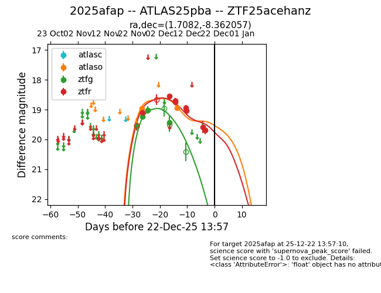
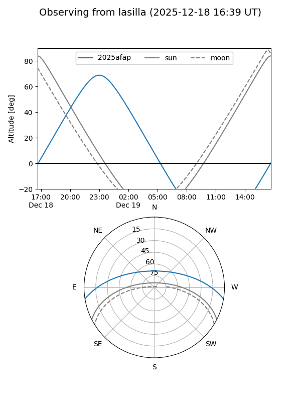
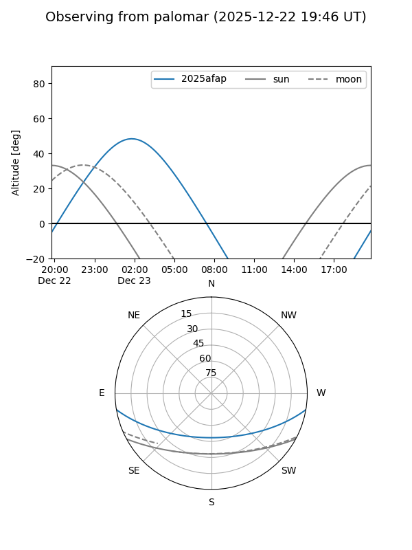

2025afap
Target 2025afap at 2025-12-20 12:20
Aliases and brokers:
FINK: fink-portal.org/ZTF25acehanz
Lasair: lasair-ztf.lsst.ac.uk/objects/ZTF25acehanz
ALeRCE: alerce.online/object/ZTF25acehanz
TNS: wis-tns.org/object/2025afap
YSE: ziggy.ucolick.org/yse/transient_detail/2025afap
alt names
ZTF25acehanz (ztf,fink_ztf)
2025afap (tns,yse)
ATLAS25pba (atlas)
Coordinates:
equatorial (ra, dec) = 1.7082,-8.36206
equatorial (HMS+DMS) = 00:06:49.96,-08:21:43.41
galactic (l, b) = (91.5089,-68.46831)
Flags:
Photometry:
last atlaso=18.93, ztfg=19.43, ztfr=19.68
2 atlaso, 4 ztfg, 8 ztfr detections
Lightcurve

Visibility


Additional plots